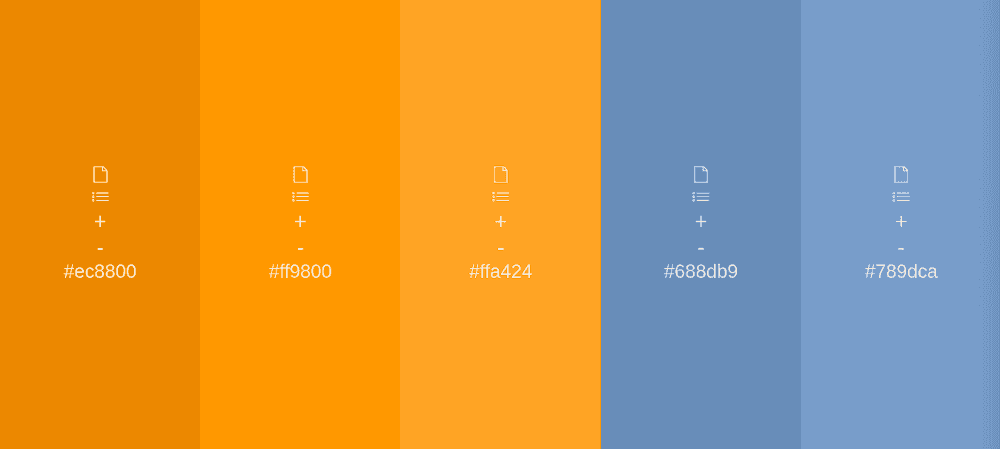
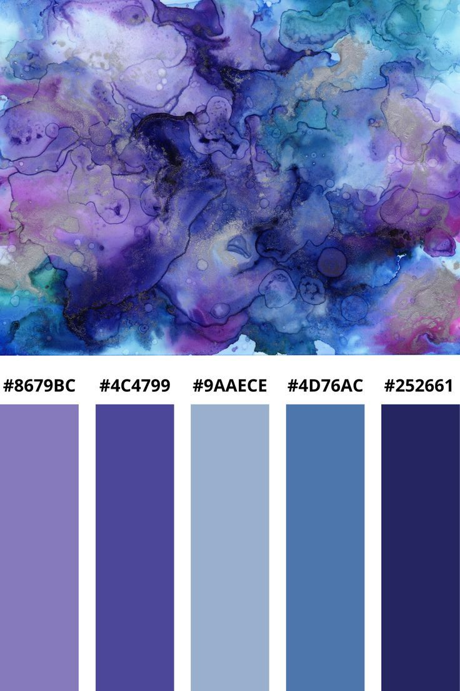
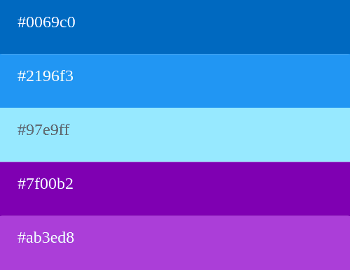
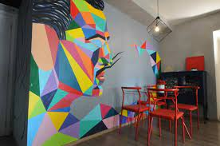
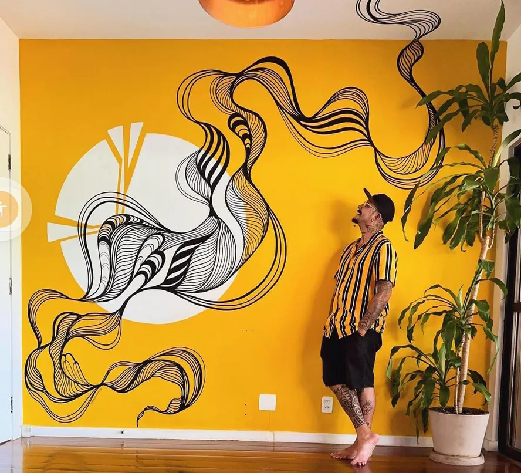

Descubra cores que irá usar na sua casa
A paleta de cor que está presente na sua casa pode inteferir em todos seus sentimentos, te causando conforto, sono, concentração, agonia, ansiedade, tranquilidade e harmonia, apenas com a cor usa em cada ambiente
Como saber?
Para entender melhor sobre o assunto, leia sobre piscoloia das cores
Piscologia das cores:
É um estudo que se propõe a entender o que cada cor transmite.
A divisão de cores que são mais
utilizadas são quentes e frias
Cores quentes
cores quentes transmitem sensação de aconchego, alegria, otimismo, além de poderem tornar o ambiente mais acolhedor e convidativo
Cores frias
Cores frias transmitem sensações como calma, tranquilidade e até concentração

Exemplo de uma decoração quente

Exemplo de uma decoração mesclada
Paletas
Nossa loja: www.melhorescores.com.br
Isso será um exemplo do nosso estoque, teremos divarsas variações dos exemplos
Nessa demonstração será de alto contraste

Agora a mesma combinação em tons pasteis
Uma pelta com pouco contraste
Mesma paleta um tom mais claro e vivo
Temos muitas opções, essas são algumas delas.
Agora siga a próxima etapa de nosso site para
não errar na compra
Estilos
Nossa loja: www.melhorescores.com.br
Temos diversos estilos disponiveis
Como funciona? Temos opções.
Pode contratar um de nossos artistas para fazer o desejado na
parede de sua casa.
Uma arte delicada, simples, elegante
Algo mais colorido, dando personalidade ao lugar
algo diferente, é um dos mais estilosos artistas que temos
Marina Silvestre
Arte organica e fluida
Contato (11) 98765-54321
Inspirada na natureza, usa cores terrosas e foemas organicas
Técnica de pintura com pinceladas fluidas e sobreposição de tons
Ideal para casas no campo, espaços zen ou quem busca conecxão com o natural
Rafael "Raio" Ventura
Arte urbana e geométrica
Contato (11) 83623-6375
Influencia od gráfite e arte pop, com cores vibrantes e formas geométricas ousadas
Trabalha com moldes e projeções para criar padrões precisos(triângulos,labirintos,pixels).
Adora incluir ilusões de ótica em seus projetos